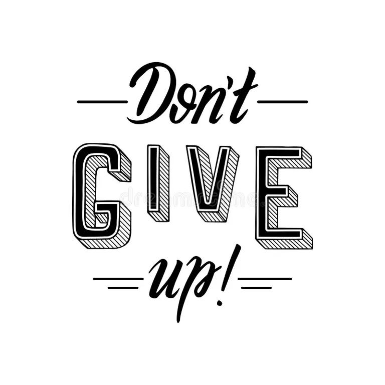

In the pursuit of any significant goal, there is an inevitable period often referred to as "the messy middle." It is the space between the initial spark of inspiration and the final moment of achievement. In this space, the primary obstacle is rarely a lack of skill or resources, but rather the exhaustion of the will. To succeed, one must adopt a philosophy of being relentless—not as a burst of temporary energy, but as a sustained, stubborn refusal to be sidelined by circumstance.